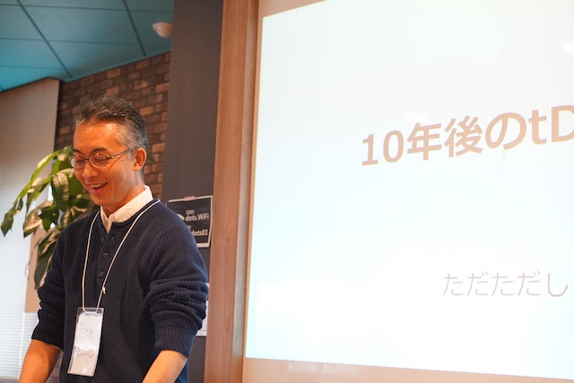

tDiary 15th anniversary party レポート
tDiary の 15 周年をお祝いするイベントが開催されました。tDiary は Web 日記を実現するオープンソースソフトウェアで、少なくとも 25 年間は日記を書き続けられることを目標としています。2001 年 4 月に誕生し、15 周年となる今でも開発が続けられています。
- イベント名: tDiary 15 周年パーティレポート
- 開催日時: 2016 年 4 月 24 日(日) 13:00~17:00
- 会場: イベント&コミュニティスペース dots. (渋谷駅周辺)
- ハッシュタグ: #tDiary #eventdots
会場には tDiary が好きな人が 12 名集まり、お菓子を片手に和気藹々と tDiary について語り合いました。
「10 年後の tDiary」 by ただただしさん （基調祝辞講演）
トップバッターは tDiary の創始者である、ただただしさんです。tDiary が 25 歳になる 10 年後に向け、今後の展望を静かに、でも熱く語ります。 
これまでの 15 年とこれからの 10 年
tDiary は 25 年間続けるプロジェクトです。4 月 20 日で 15 歳になりました。25 歳になるまであと 10 年残っています。
これまでの 15 年で進化したところは、最新の環境へ追従できていることです。Ruby は最新版の 2.3.0 に対応する一方で古いバージョンのサポートはばっさりと切っています。実行環境は Rack、PaaS、docker、HTML5 などの新しい環境に対応し、開発環境も GitHub、Heroku pipeline、Travis CI を使うようになりました。一方で、あまり進化していないところは、スマホアプリへの対応、性能の向上です。よくスマホアプリはないの？と聞かれるものの、レスポンシブデザインに対応することで必要性が薄まっているとのことでした。また、tDiary は相変わらず遅いものの、高負荷による 503 エラーが怖くておいそれと炎上できずに平和とも言えます :)
これからの 10 年を考えたときに、「死んだ後も自分が日記の中に残っていてほしい」と考えるようになったそうです。ここで、たださんが「自分が死んだ後に日記を残したくない人」と質問します。2~3 名の方が手を挙げると、「ほとんどの人が手を挙げると思っていた。死んだ後にも日記を残したい人がこれだけいるとは、これからの話は与太話のつもりだったが、これでは与太話にならなくなる」と言って、会場の笑いを誘います。
10 年後の読者は人工知能
日記を書き続ける価値は、古い話題が残ることです。たとえば、「ループは人の業、再起は神の業」という 2007 年の酒井さんの日記でのリンク先が今でも残っていることや、結城浩さんのツイートをきっかけに2003 年の日記を読み返して出会いを思いだすなど、日記を残すことは大切です。オデッセイという邦題で映画化された火星の人は、火星での 1 年間のサバイバルを日誌形式の文体で表現しています。この小説は日誌というより日記の面白さがあります。感情がこもった日誌＝日記であり、感情がこもっているからこそ日記と言えます。
さて、10 年後の Web 日記の読者は誰でしょう。主な読者は人工知能になっていそうです。今でも読者の半数は bot であり、今後の読者が bot から人工知能に変わることは十分に考えられます。今の人工知能は特定の分野に特化していますが、いつかは汎用の人工知能が実現できるでしょう。AlphaGo がそうであったように、おそらく人類は人工知能のことを理解できません。では逆に、人工知能は人類に興味を持つでしょうか。持ってもらいたいという想いがあります。人工知能が人類を理解するためのポイントは「感情」になるでしょう。人工知能は身体を持たないので、人類と同じ感情は生まれないでしょう。代わりに、同一人物が時系列に沿って事実と感情を記録した日記が、人類を理解するための手段になるでしょう。人工知能が十分に進化する未来まで、Web 日記を残し続けたい。Web 日記を永続化することが、10 年後の tDiary の目標です。
残りつづける日記
日記を残し続けるための技術的なハードルは 3 つあります。ストレージ、ホスティング、名前解決です。ストレージ、データを置く場所はインターネットのすきまで生きることでなんとかなりそうです。システムを動かす場所であるホスティングの問題と名前解決の問題は、まだまだ解決が難しそうです。URI が変わらなくとも、未来のアーキテクチャーは Web でなくなっているかもしれません。
ともあれ、日記を楽しく書き続けましょう！
講演リンク
「High Performance tDiary」 by しばたさん (祝辞講演)
tDiary は遅い。とうことで、高速化の手法について話します。
高速化のまえに計測が重要です。stackprofというプロファイラを自分の日記に仕込んで 1 日動かし、どこに時間がかかっているかを計測します。それで、いくつかのボトルネックが見つかります。
- 1 つ目は意外にもキャッシュです。memcache サーバに保存していたキャッシュを復元するための Dalli::Server#deserialize で時間がかかっていました。日記サーバは 1 台で運用しているので、ローカルの PStore に戻しています。
- 2 つ目は XML の解析です。いくつかのプラグインは、amazon や flickr などの Web サービスと連携するために XML パーサーを使っています。REXML から native extansion で動くOgaへ置き換えます。benchmark-ipsというツールを使って XML 解析の処理性能を計測すると、REXML から Oga に置き換えることで 4.2 倍も速くなったそうです。
- 3 つ目はカレンダープラグインです。日記データを格納したディレクトリをすべて Dir.glob しているので、長く日記を書いていると、どんどん遅くなっていきます。これを最適化することで、1.2 倍ほど速くなっています。
他にも、CGI::Util#unescape に時間がかかっていますが、これは Ruby2.4.0 で C 拡張化され速くなるとのこと。最新の Ruby を使うと tDiary も恩恵を受けられそうです。そうして残ったのは、tDiary のプラグイン呼び出しです。複数のファイルをそれぞれ読み込んでから eval していますが、これを先に連結してからまとめて eval することで速くなるなど、まだまだ工夫のしがいがたくさんありそうです。
tDiary の高速化で苦労したところは、テストの難しさだったそうです。CGI 時代の名残りでクラスが密結合しているところがあり、それぞれ stub や mock を用意する必要がありました。それでも、Rails とちがって tDiary はまだまだハックの余地がたくさん残されていて楽しい！と、嬉しそうに話されていたのが印象的でした。
会場からは、tDiary での日記の更新に時間がかかるという質問がありました。しばたさんからは、本体はそれほど遅くないはず、プラグインで時間がかかっているかもとの答えでした。ただただしさんからは、プラグインを並列処理すれば速くなるかもしれない、というアイデアも出ていました。
講演リンク
「最近の tDiary」 by まちゅ (祝辞講演)
講演リンク
ケーキでお祝い！

party のために用意したお祝いのケーキを現在のメンテナ 3 人で入刀し、参加者全員でおいしく食べました。
「bootstrap と SCSS で tDiary を手軽に今風デザイン化」 by code for Nagoya 宮内はじめさん (ライトニングトーク)
- tDiary が初の OSS, github も
- bootstrap でいまどきな画面に
- スマホ対応もアプリなくても OK
- あんまり手をかけずにいまどき感をだす
- フォントサイズ 16pt がいい感じ
- SCSS にて@expand を使って tDiary クラスに継承
会場から
- コンパイル後の CSS は bootstrap のコードを含んでいる？ ➡︎ MIT ライセンスになる
- テーマにコミットしちゃいましょう。
- CSS 単体でうごく？ ➡︎ Web フォントあるかも？ bootstrap の JS ファイルあるかも？
- 本体の HTML に手を入れなくてもいい感じに動く ➡︎ ヘッダ、フッタに少し手を入れている程度
発表リンク
「tdiary-cache-null, magellan-tdiary の紹介」 by やまだつよしさん (ライトニングトーク)
- 福岡からきました！
- SAFE は tDiary のために
- MAGELLAN プラットフォーム ➡︎ docker ホスティング
- Rails だけでなく Web アプリ動く
- REDIS が MYSQL より遅い
- キャッシュしないキャッシュプラグインを作った
- 公式リポジトリに入った
- 環境変数で docker の動作を設定
- docker-compose でも動くよ！スケールするよ！
- MAGELLAN のバグ出しのつもりが tDiary のバグ出しに
- デモ … ファイアウォールに阻まれる！
会場から
- 月額いくら？➡︎最初の 3 ヶ月は無料➡︎ w
自己紹介タイムと記念撮影

参加者のみなさんからも自己紹介や tDiary への想いを順番に話していただいた後、参加者全員で記念撮影をしてイベントを締めくくりました。